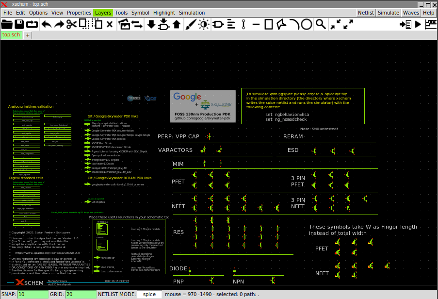
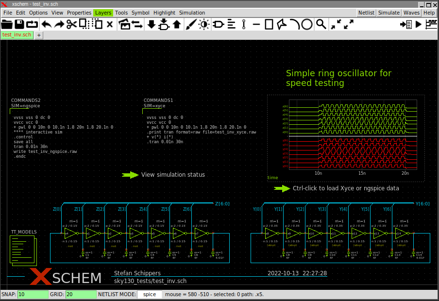
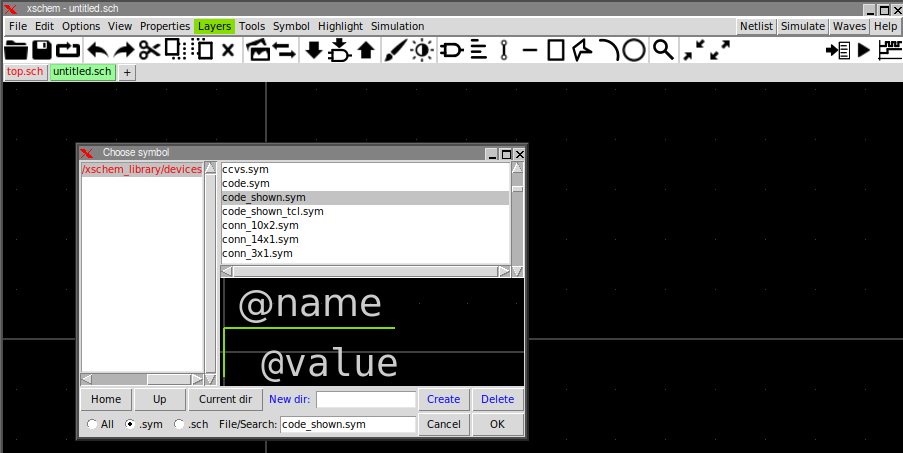
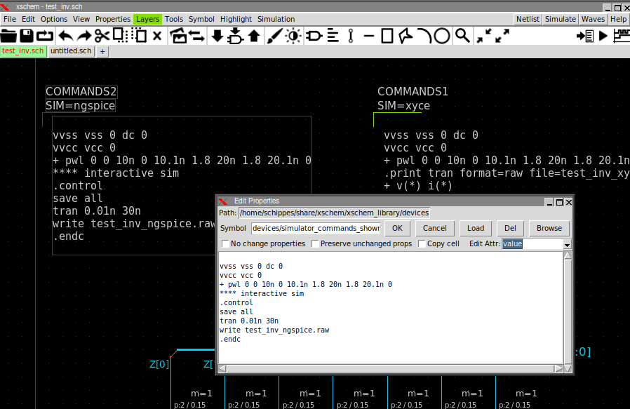
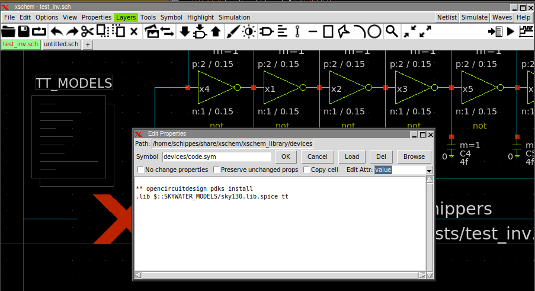
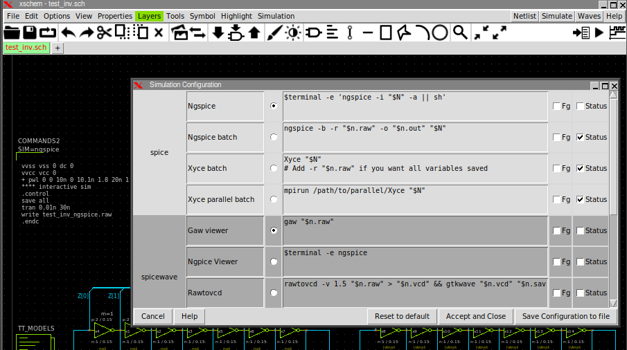
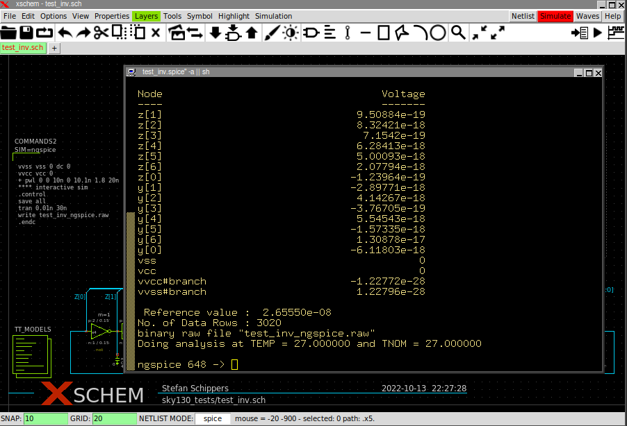
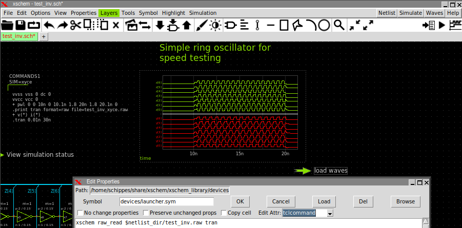
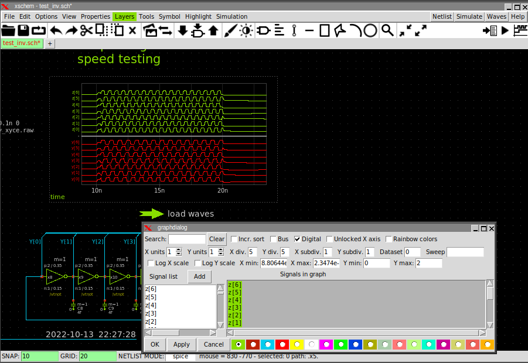

XSCHEM SKY130 INTEGRATION
To use Xschem with the Google-Skywater 130nm process (here: Sky130) The following items must be followed:
- Install Xschem. Follow the Manual Install instructions
- Install the Magic VLSI layout editor. Instructions here.
- Install ngspice, by cloning the git source repository and building the program.
If you install xschem from sources ensure no xschem package is already installed in your linux system. Packaged xschem versions
are too old so you should remove the installed package. The command for ubuntu/Debian systems is
sudo apt-get remove --purge xschem
## clone the source repository into a local ngspice_git directory
git clone https://git.code.sf.net/p/ngspice/ngspice ngspice_git
cd ngspice_git
mkdir release
./autogen.sh
cd release
## by default if no --prefix is provided ngspice will install under /usr/local/{bin,share,man,lib}
## you can add a --prefix=/home/username to install into your home directory.
../configure --with-x --enable-xspice --disable-debug --enable-cider --with-readline=yes --enable-openmp --enable-osdi
## build the program
make
## install the program and needed files.
sudo make install
IMPORTANT!!
You need to create the following .spiceinit file in the directory where simulations are run
(typically ~/.xschem/simulations)
or in your home directory. This file sets some default behavior for reading .lib files and speeds up loading pdk model files.
set ngbehavior=hsa
set ng_nomodcheck
Please ensure sufficient disk space is available (Open_pdks uses several GB, a lot of space can be recovered after installation by removing the source files if needed). Also keep in mind that the installation takes considerable time. The following steps are needed:
## fetch the repository with git: git clone git://opencircuitdesign.com/open_pdks cd open_pdks ## configure the build, a --prefix option can be given to install ## in a different place, by default after installation a ## /usr/local/share/pdk directory is created if no --prefix is provided. ## Below line for example requests installation in my home directory ## (/home/schippes/share/pdk): ## ./configure --enable-sky130-pdk --prefix=/home/schippes ## Do the following steps one at a time and ensure no errors are ## reported after each step. ./configure --enable-sky130-pdk make sudo make install
If you want to install also the gf180mcu pdk replace the above ./configure command with the following:
./configure --enable-sky130-pdk --enable-gf180mcu-pdk
Xschem libraries also have been installed and are located under <prefix>/share/pdk/sky130A/libs.tech/xschem/ or <prefix>/share/pdk/sky130B/libs.tech/xschem/.
the sky130B directory contains the ReRAM Sky130 process option in addition to all Sky130A devices.
mkdir test_xschem_sky130
cd test_xschem_sky130
echo 'source /usr/local/share/pdk/sky130B/libs.tech/xschem/xschemrc' > ./xschemrc
xschem

You can disable the welcome page by commenting the following line in the xschemrc file:
set XSCHEM_START_WINDOW {sky130_tests/top.sch}
or:
unset XSCHEM_START_WINDOW
PDK_ROOT and PDK environment variables
Xschem (via the xschemrc file) looks for a PDK_ROOT environment variable that points to the installed pdk to use. This is expecially useful if multiple or different versions of the pdk are installed. If the pdk is installed in /usr/local/share/pdk PDK_ROOT should be set to /usr/local/share/pdk. For Sky130 another variable PDK tells the process variant to use (currently sky130A) or sky130B). If PDK is unset the default sky130A will be used. If no PDK_ROOT variable is defined xschem will look into the following locations and pick the first existing found in the order listed below:
- /usr/share/pdk
- /usr/local/share/pdk
- ~/share/pdk
If no pdk is found a warning message is displayed on the xschem launching terminal.
Simulating a circuit with sky130 devices
The best way to quickly set up a simulation with Xschem is to look at some of the provided examples.
If you descend into the test_inv component you see a working circuit ready for simulation.

One line is needed in the spice netlist to load the spice models:
.lib /usr/local/share/pdk/sky130A/libs.tech/ngspice/sky130.lib.spice tt
The exact path depends on the install location of the pdk as explained above. In the picture above the TT_MODELS component takes care of generating the .lib line in the netlist. the tt at the end of the .lib line is the process corner (tt = typical n, typical p transistors). You can change the corner to ss, sf, fs, ff to verify your design across process variations.
You see in the circuit a COMMANDS2 component. This component allows to enter text to specify the simulation to run,
giving simulator commands and options.
You place this component by pressing the Insert or i key, browsing into the standard xschem
devices directory and placing code_shown.sym or code.sym into the schematic.

Once placed in the schematic, you may click the component, press q to edit its attributes, set the
Edit attr. listbox on the right to value and enter the simulator commands to run the simulation.
You can give a reference name to this component by setting the Edit attr. listbox to name and give it
a name that will be diplayed in the schematic. (COMMANDS2 in the example).

Note in above commands a write test_inv_ngspice.raw command. This example runs simulation with both Xyce and ngspice so the output raw file is differentiated. If you just plan to use one simulator a good suggestion is to write a raw file with the same name as the circuit, so write test_inv.raw.
If you select the TT_MODELS component and press q you see the reference to the PDK top library SPICE file.
The path is specified using TCL variables that have been generated by xschem when the pdk installation was looked up.
This allows to have portable schematics, no absolute path is hardcoded in the schematic files.

If everything is set up correctly pressing the Netlist button or hitting the n key will produce
a spice netlist of the circuit. The netlist location is by default set to your home directory:
~/.xschem/simulations
schippes@mazinga:~/x/test_open_pdks$ ls -ltr ~/.xschem/simulations/ ... ... -rw-r--r-- 1 schippes schippes 3266 ott 18 15:26 test_inv.spice
You can then simulate the circuit. Select the simulator to use by clicking menu
Simulation->Configure simulators and tools and selecting (for this example) ngspice

Press the Simulation button and see the ngspice running in a terminal:

The default terminal used by xschem to run the simulator is xterm. I strongly suggest you to install xterm
(on ubuntu/debian Linux: sudo apt-get install xterm) since it is a very small package and is not a broken terminal
like most Gnome/KDE/LXDE stuff. You can however use any terminal editor by specifying the one to use in your xschemrc.
If not specified xschem defaults to xterm
## set terminal xterm
set terminal gnome-terminal
After completing simulation you can add into the schematic a graph (Simulation->Add waveform graph)
and a waveform reload launcher (Simulation->Add waveform reload launcher).
The launcher has a tclcommand attribute that loads the simulator data file (test_inv.raw) and
specifies the type of analysis (op, dc, ac, tran)

See the manual for details
